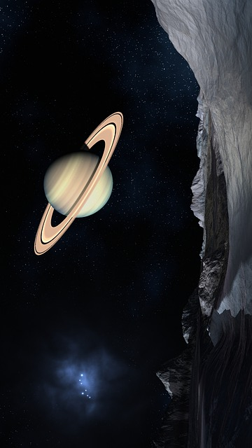
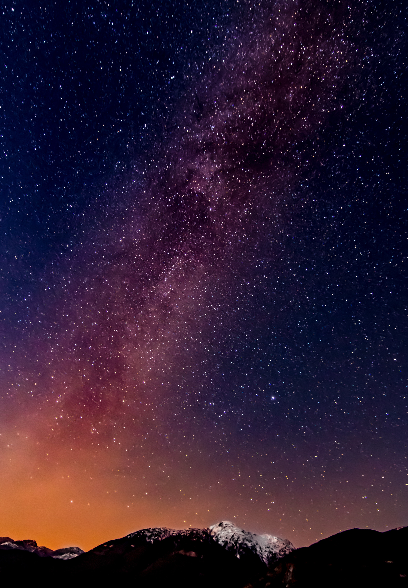

All of space and time and their contents, including planets, stars, galaxies, and all other forms of matter and energy is part of this Universe .
You just need to look up!

Guess which planet is this.
Guess which constelation is this.
Guess which nebula is this.

Guess which galaxy is this.
“Through our eyes, the universe is perceiving itself. Through our ears, the universe is listening to its harmonies. We are the witnesses through which the universe becomes conscious of its glory, of its magnificence.”.
― Alan Wilson Watts
Do you love the universe too?
Receive more information by clicking that button right over there.